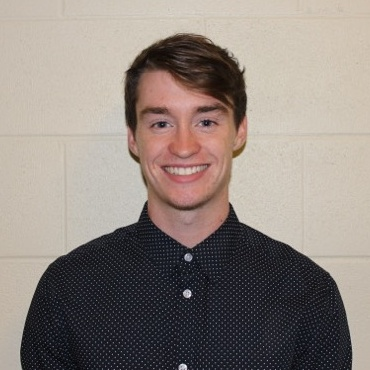
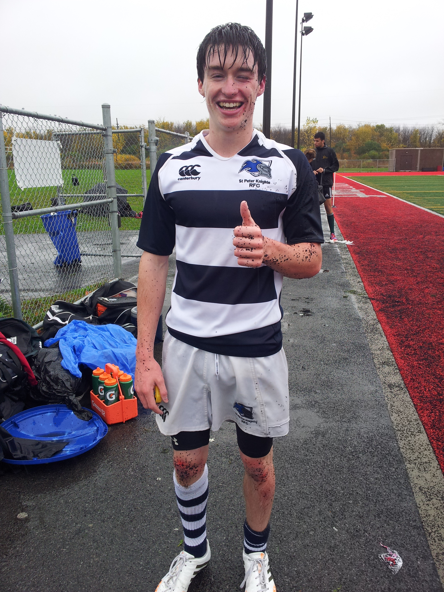
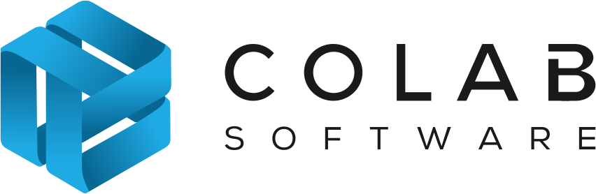
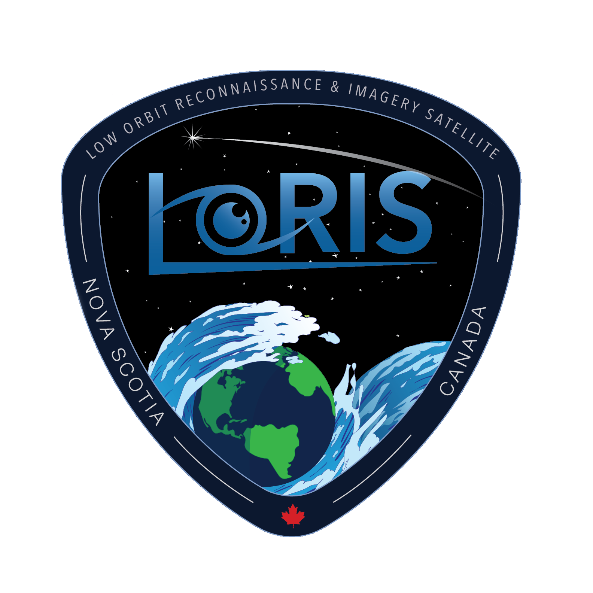

About Me

I'm 21 years old and I grew up in Ottawa before moving to St. John's for school. I am an active person and spend my spare time
hiking, biking, playing guitar, and playing
sports when I have the time. My passion for music has ended up
with me being frontman for my band, Eight Step.
Hockey and rugby are my main sports and I was on many successful teams during and after high school. I played a leadership role
as captain and learned how to work as part of a team and also motivate the other members of the team. I believe these early leadership experiences have
helped me excel and take on extra responsibility with current teams I'm on.
×

×

Work

I have been working at CoLab Software for the past 11 months as a full stack developer with a slight focus on the front end.
During this time, I have accomplished a lot, and developed many complex features that add true value to our product, Gradient. I have
demonstrated my ability to lead in various ways such as taking the lead on pushes to get important features in, and organzing test day at the
end of our 2 week sprints.
I have proven myself to be a highly functioning member of the team, not only as a developer, but someone with good ideas to bring to the table who can do whatever you need them to.
Working for a fast growing start up has been an immensely gratifying experience, and I hope to one day either lead a development team or a company of my own.


I have been a member of the Dalhousie Space Systems Lab for 14 months. We are a team of students, professors, and researchers participating in the
Canadian CubeSat Project. Since joining the team I have taken on many tasks such as designing,
building, deploying, and maintaining the team website. I have also been a core member of the software
team, being resposible for writing C++ code that will run aboard the CubeSat while it is in space. Furthermore, I have put countless hours of reseach into previous CubeSat designs and software systems
to ensure we have the best possible satellite. This is a once in a life time opportunity and I am lucky to be a part of it.

I completed two 4 month Co-op work terms at Nokia Networks in Ottawa. It was a terrific workplace with challenging work and a great team atmosphere.
My team provided 3rd level support for Nokia installations around the world using one of their successful enterprise level software solutions entitled NSP NFM-P.
I learned a lot about the product itself and was able to hone my problem solving, troubleshooting, and programming skills on a massive product dealing with important customers.
During my time at Nokia I provided numerous presentations to both peers and management staff about the work I was doing.
The Ottawa Nokia campus employs about 60 co-op students and I was one of 3 students on the internal Co-op council which Nokia developed to be a voice for the the co-op students.
I was also a member of the 3 person co-op team responsible for part of Nokia's United Way fundraiser.
Resume
School

I graduated high school with Honours and was an Ontario Scholar with a French Immersion certificate.
With an aptitude for science, math and troubleshooting it was a logical decision to pursue a career in engineering. Recognizing that the future in most industries would be built
around automation and having a passion for software I chose Computer Engineering as my discipline.
Choosing Memorial University of Newfoundland (MUN) was an easy decision. With my sister completing her Master of Science degree at MUN and my mother being
from Newfoundland I had spent a lot of time on the island and I loved it.
In my first year in residence, I was fully engaged in all activities and was elected as House President for my second year. Although I had a lot of fun,
I did the work and was rewarded with good marks. Once I entered my discipline, I was also elected as the Computer Engineering Class Representitive. In this position, I act as an interface between the students and professors,
as well as organize all of our class events. It's a lot of work but I love doing it.
In first year I provided math tutoring for a local community association and really enjoyed helping the folks there. In second year I was a math/chemistry tutor again and worked
at MUN helping students throughout the semester. It was very rewarding.
Contact